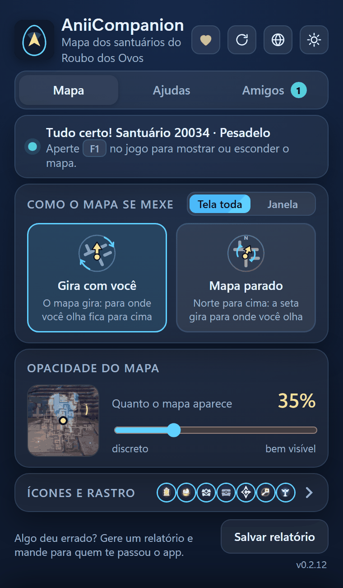

Baixar e instalar
Um zip, uma pasta, um clique no .exe. Leva poucos minutos.
Download em breve. A versão nova está quase pronta.
Requisitos
Antes de baixar
- Windows 11, 64 bits.É onde foi testado. O Windows 10 deve funcionar, mas ainda não foi testado.
- Aniimo em janela ou tela cheia sem bordas.A tela cheia exclusiva não pode ser capturada, então o mapa não funciona nela.
- Internet na primeira vez.O app baixa os mapas dos santuários. Leva alguns segundos.
Download
Qual arquivo baixar
A página do GitHub lista vários arquivos. Você só precisa do .zip do AniiCompanion, não do “Source code”.
- Abra a página de downloadEla abre no GitHub, com a versão mais recente.Abrir no GitHub
- Role até “Assets”É a lista de arquivos no fim da página da versão.
- Clique no .zipEle se chama
AniiCompanion-<versão>.zip: o verde na ilustração. O número muda a cada atualização.
Instalação
Instalar o app
- Extraia a pasta inteiraClique com o botão direito no zip e escolha “Extrair tudo”. Não rode de dentro do zip.
- Abra o AniiCompanion.exeNa primeira vez o Windows pode avisar. É normal: veja a próxima seção.
- Escolha o idiomaNa primeira vez, o app pergunta “Em qual idioma você quer o app?”: toque em “Português” ou “English”. Dá para trocar depois no botão do globo.
- Espere os mapasNa primeira vez, o app baixa os mapas dos santuários. Leva alguns segundos.
- Abra o Aniimo e entre no Roubo dos OvosO mapa aparece por cima do jogo, só dentro do santuário.
- A dificuldade se acerta sozinhaO app descobre pela meta de moedas do painel do jogo (Normal, Difícil, Pesadelo ou Caos). Se não conseguir, o próprio santuário indica. Não há o que escolher.

Esta é a janela do app
- Reiniciar mapa. Se o mapa aparecer estranho no jogo, um clique refaz.
- Idioma. O globo troca o idioma do app (Português ou English). O ícone ao lado troca o tema claro/escuro.
- Aba Mapa. Como o mapa se mexe (tela toda ou janela, gira ou parado), opacidade e ícones.
- Aba Ajudas. Liga e desliga cada aviso da partida.
- Aba Amigos. Seu nome e código, adicionar amigos e montar a equipe.
- Faixa de status. Diz se o app está esperando o jogo ou já achou você no santuário, com a dificuldade (“Tudo certo! Santuário 20034 · Pesadelo”).
- Salvar relatório. Se algo der errado, gera um .zip na pasta Downloads para mandar a quem te passou o app.
Aviso do Windows
O Windows avisou ou bloqueou?
O app é gratuito e não tem certificado pago de assinatura. O Windows avisa sobre todo programa assim, mesmo sem nada de errado. Os outros mapas do Aniimo estão na mesma situação.
- Veja o avisoAparece “O Windows protegeu o computador” ao abrir o .exe.
- Mais informaçõesClique no texto Mais informações.
- Executar assim mesmoClique no botão que aparece. Normalmente só é preciso uma vez.
O antivírus removeu o app
Abra Segurança do Windows, depois Proteção contra vírus e ameaças, depois Histórico de proteção. Ache o AniiCompanion, clique em Ações e em Restaurar. Se continuar acontecendo, adicione a pasta do AniiCompanion em Exclusões. A exclusão vale só para essa pasta, então não coloque outras coisas dentro dela.
O Windows pede de novo a cada atualização?
As atualizações feitas pelo próprio app não devem pedir de novo.
Com ele ligado, nenhum programa sem assinatura abre, e não há botão para liberar só um. O app não funciona com ele ligado. Desligar é decisão sua: depois de desligado, o Windows não deixa ligar de novo sem reinstalar o Windows.
Segurança
Conferir que o arquivo é o original
Opcional, leva um minuto. A página de cada versão mostra o SHA-256 do zip. Para conferir o seu, abra o PowerShell na pasta do arquivo e rode:
Get-FileHash .\AniiCompanion-<versão>.zipCompare o resultado com o da página da versão. Se for diferente, não use o arquivo.
Atualização
Atualizar
O app confere sozinho se há versão nova, ao abrir e a cada 6 horas.
- Veja o avisoNo alto da janela do app aparece Nova versão 0.2.12 · Atualizar
- Clique neleLeia as novidades e toque em “Atualizar agora”. O app faz o resto.
- ProntoEle baixa, confere a assinatura do autor e só então troca o app.
Suas configurações, amigos e mapas baixados continuam. A versão anterior fica numa pasta chamada AniiCompanion.anterior, ao lado do app.
Remoção
Desinstalar
Apague a pasta do app. Só isso.
Suas configurações e registros ficam em %LOCALAPPDATA%\AniimoCompanion. Apague essa pasta também se quiser remover tudo.